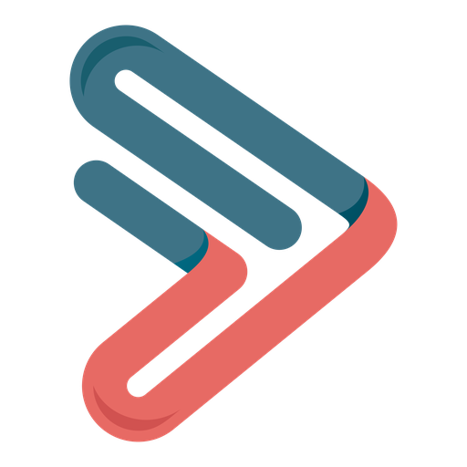
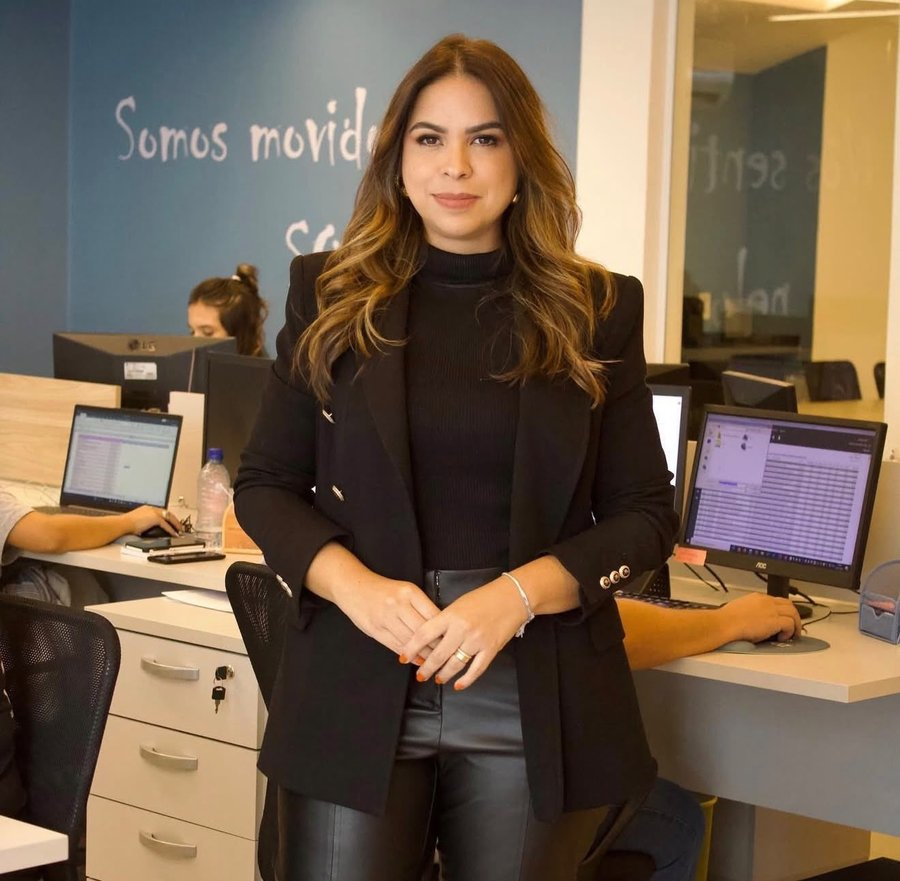

Meu papel hoje não é mais fechar cliente nem apagar incêndio da operação: é olhar indicador, decidir direção e construir estrutura. Ninguém deixa de ser indispensável — a gente só muda de cadeira.

Tática Gestão Contábil
Quem constrói a Tática
Fundadora e CEO da Tática Gestão Contábil — Maceió/AL
Comecei do zero, ainda na faculdade, ao lado do Fabiano, com uma vontade específica: construir o escritório de contabilidade que eu queria ter encontrado como cliente. Dezoito anos depois, a Tática atende empresários de vários setores, com força especial na saúde, e tem um setor comercial estruturado — time dedicado, metas definidas com a alta gestão, rituais e indicadores acompanhados de perto.
Meu papel hoje não é mais fechar cliente nem apagar incêndio da operação: é olhar indicador, decidir direção e construir estrutura. Ninguém deixa de ser indispensável — a gente só muda de cadeira.
"As pessoas precisam comprar a empresa, não a dona."
— Priscila GalindoO que não está escrito, não existe. Enquanto meta, comissionamento, papéis e rituais moram só na cabeça de uma pessoa, o comercial não é um setor — é uma dependência: cada contratação vira recomeço, e cada bom resultado vira sorte que ninguém sabe repetir.
Documentar dá clareza (o time para de adivinhar), escala (só se replica o que está registrado), continuidade (o conhecimento fica na empresa) e gestão de verdade (decisão com histórico, não com achismo). Foi assim que a Tática saiu de "a dona vende tudo" para uma máquina de vendas com método.
Trecho da Política Comercial da Tática — o documento interno que tira meta, comissão e rito da cabeça de uma pessoa só e coloca na mesa de todo o time.
Meta não nasce na área comercial — nasce na decisão de crescimento da empresa, e desce até chegar em cada pessoa. É essa origem que separa uma meta legítima de um número inventado.
Alinhamento rápido, em pé: o que fechou ontem, o que está na mesa hoje, o que está travando.
O ritual central — revisão do funil inteiro e de onde cada executivo está em relação à meta do mês.
Um a um com cada executivo: resultado do mês, o que funcionou, onde precisa de apoio.
Recalibragem de metas com base no histórico real da equipe — nunca por achismo.
"Documento comercial não é burocracia — é a diferença entre ter vendedores e ter um setor comercial."
— Priscila GalindoAs duas dinâmicas abaixo colocam no papel a meta comercial da sua empresa e o perfil comportamental de quem vende — o primeiro passo pra sair do achismo.
Acessar as ferramentas do treinamento →